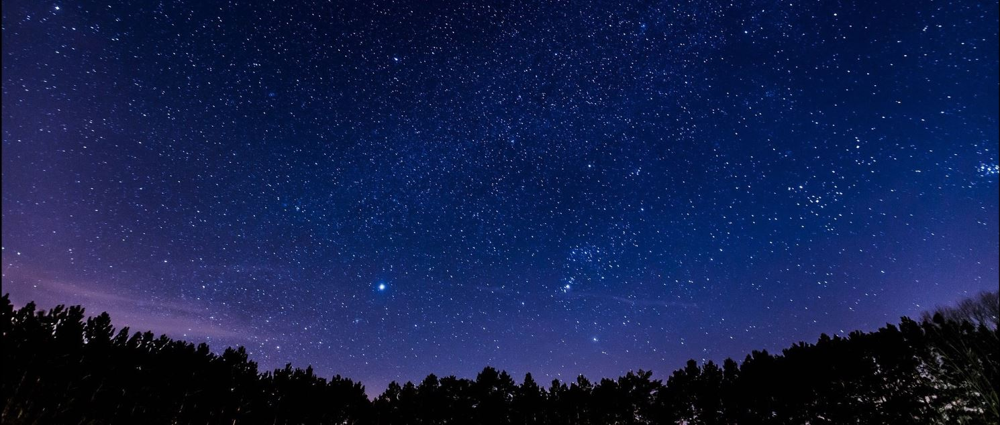
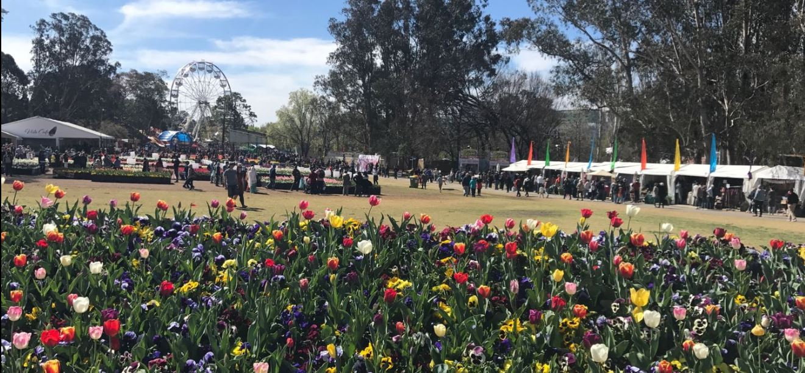
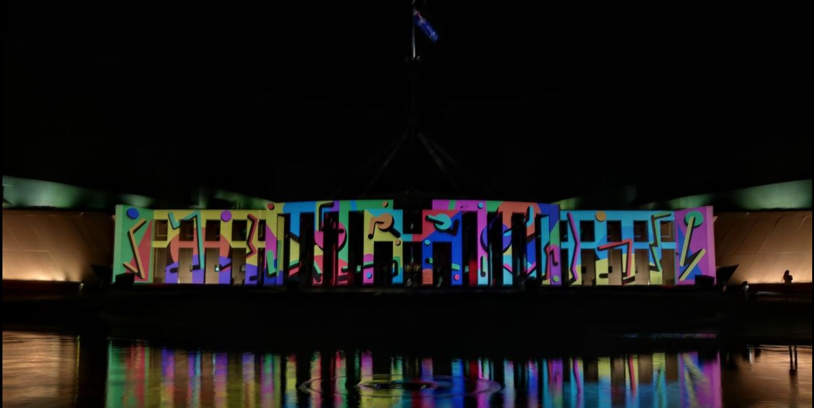
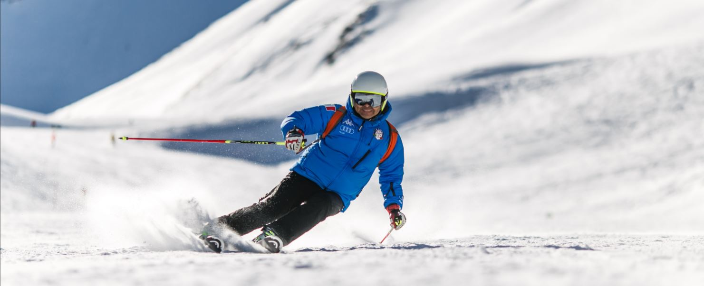
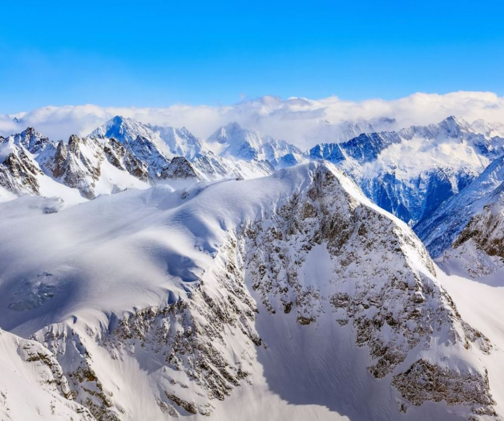
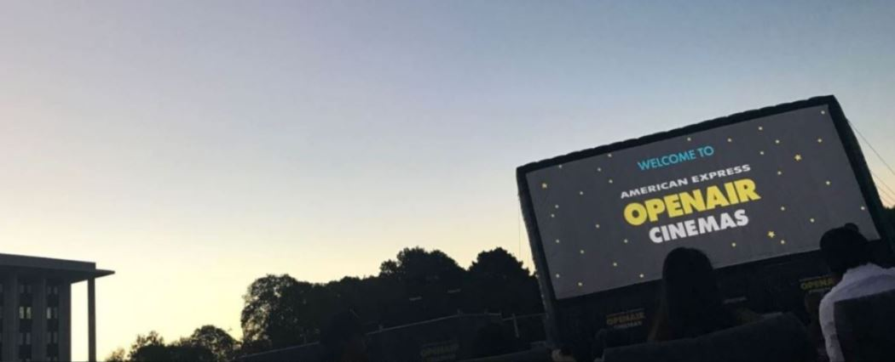

Constellations attract humans for thousands of years. We are very familiar with Polaris, Big Dipper and Orions, but what about aurora? It seems that only in Tasmania can watch aurora, but if we live near Canberra, why not invite friends to climb on the black mountain?
"Ian Williams is a chaser and he had been actively chasing the lights in Canberra for more than two years."Canberra Times reported.
Time: Spring (November in 2017)/ Winter (June in 2016) according to Canberra Times.
Fee: free
Address: Black mountain, Australian Capital Territory 2602

The once-a-year floriade festival has more than 30 years history. Located in CommonwealthPark, it's very convenient to arrive from Canberra city center. Every day, organizers invite different bands to play energetic live music and audiences can lie on the lawn or dance on the front of the stage. Jumping castle, super slide and teacup are for kids and ferris wheel and buskers performing are for everyone. Yongs can come for Nightfest, the twillight concert and delicious snacks stores should not be missed.
Time: Spring. (16 September to 15 October for 2017 session)
Address:
Commonwealth Ave, Parkes ACT 2600
Official website:
http://www.floriadeaustralia.com/
fee:
free for dayfest, $31 for nightfest.
Transportation: Drive / Floriade bus

Enlighten Canberra is a new festival since 2011. It maily has two activity venues. The main venue is in queen Elizabeth Terraces parks and ANU art school has its session venue. This festival gathered all kinds of world cuisine as well as traditional Asian activities like Lion Dance. Interesting topics of lights are represented on the walls of buildings around Parliament house and changes like a small movie. It's fun and meaningful that shows the big events happened in Australia. Apart from deliciou foods, live bands light the atmosphere on site.
Time: 2-11 March (2017)
Address: Queen Elizabeth Terrace, Parkes
Transportation:
No.1,2,6,182,200,314,315,316,319 to Commonwealth Av opp station.
Drive
Fee:free for entrance

Canberra Balloon Spectacular holds once a year and has more than 30 years history. It is located in the lawns of the old Parliament House and nearly 50 hot air ballons launched every morning. People can overlook the whole Canberra and fly on the top of the parliament house. Balloons will be lauched early in the morning around 6:15am to embrace the sunshine.
Time: 10-18 March (2018)
Official website: http://balloonspectacular.com.au
Address: 18 King George Terrace, Parkes ACT 2600
Fee: $330 each
Transportation: Dirve / Uber

Leaving far away from emails and phonecalls, say hello to the white fairy world. Canberra city is surrounded by mountains and winter in Canberra should not be boring. There are tens of ski resort near Canberra. For example, Perisher ski resort, J2Ski,Corin and so on. When winter is coming, why not invite several friends to go skiing!
Time: winter, usually June to October
Transportation: drive
Fee: depand on resorts


Openair cinemas will return to Canberra for its sixth year. While watching the classic films, you can also experience the sunset. What's more, 2018 openair is more dog friendly. You can also invite your loyalty friend dog to accompany with you. Other than watching films in cinema, this close to nature can be a new film style. What's more, cocktail and pizza is super good inside.
Time: 11 Jan - 25 Feb (2018)
Transportation:
No.1,2,6,182,200,314,315,316,319 to Commonwealth Av opp station.
Drive
Fee: depand on film and seat
website:openaircinemas.com.au
